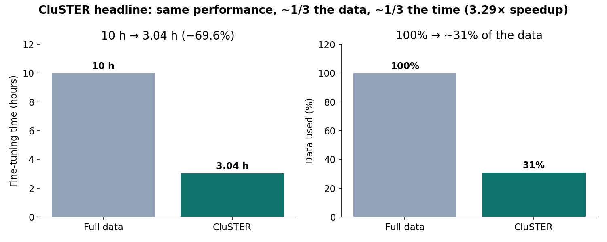
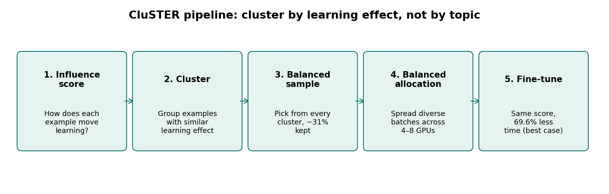
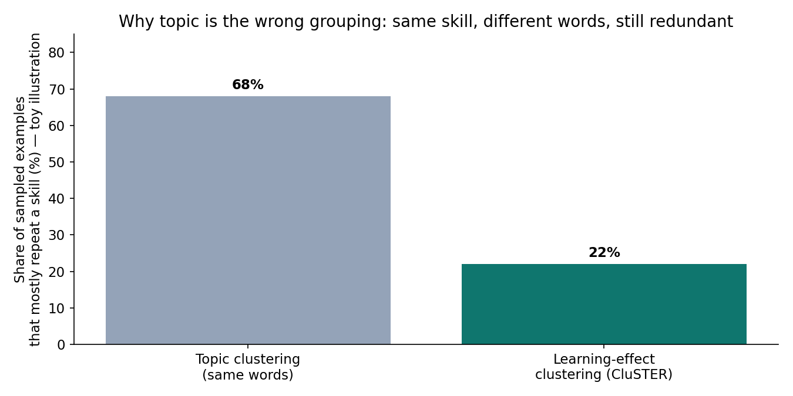
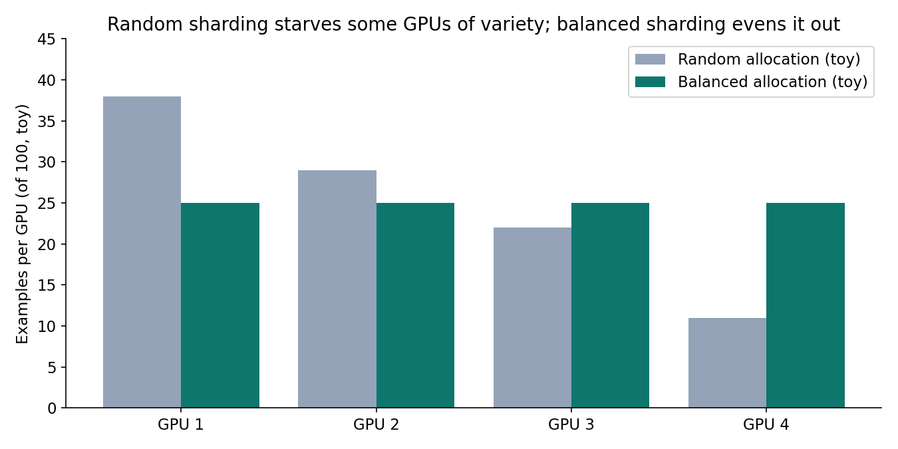

On November 2, 2026, KAIST announced a fine-tuning method called CluSTER that cut a 10-hour training run to about 3 hours — a 69.6% time saving — while keeping measured performance nearly unchanged. The trick was not a faster chip, a bigger cluster, or a smaller model. It was choosing better data: the models kept their scores while training on only about 31% of the full dataset.
CluSTER — Clustering-Based Balanced Sampling and Allocation with Data Parallelism for High-Performance Fine-Tuning — was presented in October 2026 at EMNLP 2026 (paper: arXiv 2609.12584, first author Hyunjin Kim, corresponding author Professor Jae-Gil Lee, KAIST School of Computing). The team tested it on models of about 7 billion and 13 billion parameters, on three datasets from coding and medicine, across eight benchmarks, mostly on four GPUs with an eight-GPU test as well.
This post explains what CluSTER actually does, why grouping by topic is the wrong grouping, and where the headline number stops applying.
The ELI5 version
Imagine studying for an exam with a 1,000-question practice bank. Half the questions are the same skill wearing different clothes: solve for x, but with different numbers, different names, different stories. Doing all 500 teaches you that skill once and then wastes your evening repeating it.
Now imagine a study partner who first sorts the bank by what each question teaches you, picks a few from every pile, and hands you a short set that still covers every skill. You finish in a third of the time and score about the same. That study partner is CluSTER. The "piles" are clusters of examples with similar effects on learning, the "short set" is a balanced sample across those clusters, and the "handing out" is distributing diverse batches evenly across GPUs so no chip wastes its time re-learning the same lesson.
The key insight is embarrassingly simple once stated: fine-tuning time is mostly spent on redundant examples. If your dataset teaches the same skill fifty ways, forty-nine of those ways are nearly free to drop — provided you keep the one that teaches it best, and provided you don't accidentally drop an entire skill.

How it works: influence, cluster, sample, allocate
CluSTER has four steps, and the order matters:
- 1. Score each example by its effect on learning. This is the step that separates CluSTER from ordinary data filtering. Instead of asking "what topic is this example about?" it asks "how does this example move the model?" Two examples can use different words, different domains, even different languages, and still push the model in the same direction. Those are duplicates in the sense that matters — learning effect — even though no deduplication tool based on text similarity would ever catch them.
- 2. Cluster examples with similar learning effects. Examples that teach the same thing land in the same cluster. A cluster is, in effect, one lesson the dataset is trying to teach, however many surface forms it comes in.
- 3. Sample balanced across clusters. Instead of taking the first 31% of the data (which would over-represent whatever skill dominates the dataset) or a random 31% (which can still miss rare skills), CluSTER picks representative examples from every cluster. The result keeps the full skill coverage of the dataset at a fraction of its size. In the reported medical question-answering experiment, that fraction was about 31%.
- 4. Allocate balanced across GPUs. Data-parallel training splits examples across GPUs, and random splitting can hand one GPU a batch of near-duplicates while another gets the variety. CluSTER distributes clusters evenly, so each GPU's batch is diverse. That matters because a GPU chewing through redundant examples is not just slow — it is computing gradients that mostly cancel or repeat, and the synchronization step at the end of each round waits for the slowest, most redundant worker.

The state of the art: why this lands now
Data selection for fine-tuning is not new — practitioners have long filtered by quality, deduplicated near-identical text, and upsampled rare categories. CluSTER's contribution is putting the learning effect at the center and treating allocation as part of the method, not an afterthought.
Three things make the timing right. First, fine-tuning is now the dominant way organizations adapt models: few teams train from scratch, but nearly everyone fine-tunes a base model on domain data — coding assistants, medical retrieval, internal support. A 69.6% cut in that recurring cost compounds across every adaptation run. Second, GPU time is the binding constraint for most of those teams, not data scarcity: they have more data than they can afford to train on, which is exactly the regime where dropping redundant examples pays. Third, the method improves existing infrastructure rather than demanding new hardware — the KAIST framing is that it makes the GPUs you already have more productive, which is a much easier sell than a new cluster.
The numbers to carry: 69.6% is the maximum reported saving, not the average; 31% is the data fraction in the medical QA experiment, not a universal constant; the models were 7B and 13B, not frontier-scale; and the evaluation was eight benchmarks on coding and medical data. Treat 10 hours → 3 hours as the paper's illustration of the percentage (10 × 0.304 = 3.04), not a promise about your workload. The speedup implied by 69.6% is 3.29× — 1 / (1 − 0.696) — which is the right way to compare it against any other efficiency claim you see this week.

The catch: selection is not free, and 31% is not a law
Four caveats, stated plainly:
- Scoring every example costs compute. Computing a learning-effect score for each training example — typically via gradient or influence-style signals — is itself a pass over the data. The 69.6% saving is net of whatever the paper's pipeline cost on its workloads, but on your workload the arithmetic is: net saving = 6.96 hours − selection cost, on a 10-hour run. If selection is expensive and your run is short, the method can lose. Always measure end-to-end, including selection, before cutting data.
- "Nearly the same performance" is benchmark-scoped. Eight benchmarks on coding and medical tasks do not cover everything a fine-tuned model will meet. Rare skills are precisely the ones a balanced sample is designed to protect — but a cluster the scorer misjudges is a skill silently dropped. For safety-critical domains, a benchmark pass is not a deployment clearance.
- The fraction will vary. A dataset with little redundancy (carefully curated, diverse by construction) has less to gain; a bloated, web-scraped dataset has more. If your data is already deduplicated and balanced, expect a smaller win. The 31% figure is a result on KAIST's datasets, not a dial setting.
- This is fine-tuning, not pretraining. CluSTER targets adapting an existing model to a domain. Whether influence-clustered sampling scales to pretraining — where the "skills" are far more numerous and the data far messier — is an open question the paper does not answer.

None of that diminishes the result. It reframes it: CluSTER is not "throw away 69% of your data." It is "measure what each example teaches, keep one good teacher per lesson, and stop paying GPUs to re-learn the same lesson." That is a discipline most fine-tuning pipelines currently lack — they treat data as fuel to burn, not as lessons to curate.
Takeaways
- CluSTER (KAIST, EMNLP 2026, arXiv 2609.12584) cuts fine-tuning time by up to 69.6% — 10 hours to about 3 — while keeping performance nearly unchanged, by training on about 31% of the data.
- The mechanism is four steps: score examples by learning effect, cluster by similar effect, sample balanced across clusters, allocate balanced across GPUs. The allocation step is part of the method, not plumbing.
- Group by learning effect, not topic. Two examples with different words can teach the same skill; text-similarity deduplication misses that redundancy entirely.
- 69.6% is a maximum, 31% is one experiment's fraction, 7B/13B on coding and medical data is the tested regime. The implied speedup is 3.29×. Re-measure on your own workload, including the cost of scoring.
- Selection cost is the break-even. Net saving = time saved − selection cost. Short runs and already-curated data gain less; bloated datasets gain more.
- Check it yourself. The companion notebook recomputes the headline arithmetic (3.04 hours, 3.29× speedup), demos stratified sampling that keeps all five toy skills at 31%, and shows balanced GPU dealing — plus the break-even calculation.
Sources: KAIST news release (Nov 2, 2026), Knowridge coverage (Nov 3, 2026), and the paper "Clustering-Based Balanced Sampling and Allocation with Data Parallelism for High-Performance Fine-Tuning" (EMNLP 2026 main.342, arXiv 2609.12584). All headline figures are the authors' reported results, not independently replicated; toy diagrams are labelled as illustrations.